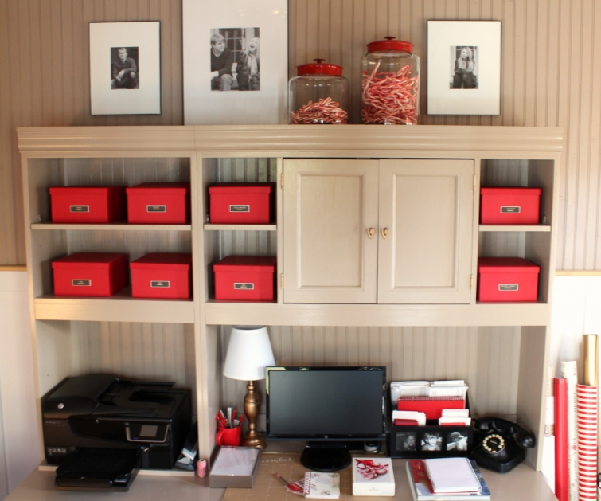

.png)
.PNG)
.PNG)
.PNG)
.PNG)
.PNG)
.JPG)
.JPG)
.PNG)
.PNG)


I guess it is silly to be grateful for a room, but I am especially grateful for one particular room in our home – my workroom. It has been a workhorse of a space for me since its completion last spring. We did not have this room to use last Christmas. In fact, it was one HUGE mess at that time, but it has become North Pole central around here this month.
And it has been a joy to decorate it this week (well…except when the garland and the drapes fell down, and I had to totally start over on that area and hold back not-nice words that danced in my head.) Other than that, it has been fun, and I have truly enjoyed dressing it up for Christmas.
I am so grateful to have those red boxes full of ribbon sorted and ready for all the decorating and wrapping…

and to have a tall basket full of gift wrap.
(Can you believe there is no buffalo check or plaid??)

I am grateful there is a table for wrapping…
and drawers full of tags and markers…
and bins of tissue and craft supplies in the cabinet.
I am grateful to have a space to work to make invitations and address Christmas cards.
And it is a joy that there are all the supplies for a mug of hot cocoa set up on the cabinet my husband built.
When I first started to decorate the workroom, my plan was to simply put a garland over the large window and clip the Christmas cards we receive to it, but once I finally got the garland up (and actually got it to stay) I wanted to do something different.
I am in this room a lot. I begin most days with cereal and coffee in here. And in this busy season when it is sooo easy to get overwhelmed by all the holiday items for sale, by all the shopping and gift wrapping, and by all the holiday social gatherings, I wanted something to keep me grounded in the true reason for the holiday – the Holy Day. I wanted an Advent calendar….not one of the ones with the toys in drawers, but one with reassuring words from the Bible.
I was working on this project when news of the heartbreaking shootings in California began to come in. In our world with so much darkness and evil, we badly need words of comfort and joy…words of hope. And the story of Christmas is just that…words to comfort and give us joy and hope in a world plagued with heartache. My heart and prayers go out for all those who have been affected by the tragedy.
I typed up the verses of the Christmas story and printed them out on cards to go in small envelopes, and I found passages to read that tell of the promise of the Messiah. Those got listed on stickers that are on the back of the wire rimmed tags, and the tags were tied on with pieces of ribbon. I did include one small piece of candy in each envelope (to keep me from devouring the entire box in one sitting 🙂 ) and I clipped it all to the garland with small clothespins. I know we are already 5 days into the month of December, but if you would like to make one like this, here is what you need:
(The clothespins came from Target, the wire rimmed tags from Michaels, the circle stickers from Paper Source, and the small envelopes came from either Michaels or Hobby Lobby.)
Once you have all your supplies, just follow these directions:
- Print out the verses on the card stock and the scripture reading on the stickers. Click here for the free printables: Advent Bible verses pg 1 and 2 , Advent verses pg 3 , Advent Season Bible readings . (I sure hope these work for you. Remember I am not very gifted in anything involving technology!)
2. Write the numerals 1-25 on each of the wire rimmed tags. 3. Place one sticker on the back of each of the tags.
4. Use the hole punch to put a hole through each tag. 5. Use the hole punch to put a hole near the top of each envelope. 6. Cut a small piece of ribbon and tie the tag on to the envelope. (I just used ribbon scraps I had around here.) 7. Cut the cards apart. 8. Place 1 card and 1 piece of candy in each envelope. 9. Clip on to the garland (or a long piece of ribbon if you prefer) using the clothespin. Enjoy daily during the Christmas season. 🙂
The Advent calendar wasn’t the only thing that was unplanned in the workroom. You see, I had thought that I would just have the cocoa supplies, a plant, and a little Christmas decor on the top of the cabinet. You saw the cocoa supplies earlier in the post…
and here is the small Christmas vignette that ended up there.
But when I went to find the plant I wanted (a small Norfolk Island pine), there were only large ones. So I decided to get a small tabletop Christmas tree…and just leave it un-decorated.
Does this tree look un-decorated to you??
I merely put a string of lights on it, and then I thought It needs something more. What does it need? I spied those quote cards on my desk (available here.)
Perfect.
I went through the stack and found ones I thought were fitting for Christmas. After more hole punching and ribbon tying they too added words of hope to the room.
And that is the workroom all ready for Christmas. 🙂
(It’s the only room in the house that is all ready!)
I hope your weekend is filled with the joy and that your to-do list is a very short one. It gives me joy to be able to share creativity with you in this place. Thank you so much for taking time out of your busy schedule to visit here. Please don’t forget about the Target gift card and magazine giveaway. All the details for entering are here. Simply leave a comment on the blog (not a reply to an email delivered one) on any post that publishes between 11/30/15 and 12:00 a.m. EST 12/6/15. You may enter on more than one post, but please leave only one comment per post. I’ll be back with the winner and more Christmas decorating (hopefully!) early next week.
I loved all your comments in the last post about where you begin your Christmas decorating! We began with the outside, and then I moved to the workroom (obviously!) I will leave you with this question today:
What is your favorite quote or Bible verse?
Until next time…


.PNG)
Your house is absolutely beautiful. I am in love with how the red pops in every room! I love your Advent Swag…thanks for sharing. I will have to save this post for next year! Merry Christmas!!!
What a beautiful space to work in! Thank you for the step by step Advent Calendar instructions, pinned for next year:)I have many favorite bible verses but here is one that I have printed on a post-it note and stuck in the front of my bible: “He is your constant source of stability; He abundantly provides safety and great wisdom, He gives ALL THIS to those who fear Him.” Isaiah 33:6
Merry Christmas, Kelly!
Well of course I always soak up EVERYTHING you decorate. Merry Christmas girlie!!
A great workspace. Love the way you’ve decorated it and the Advent calendar what a great idea.
How fortunate you are to have this wonderful work space! It is so cute and fun looking with the decorations you put up. The Advent calendar is very nice. Thank you for your words about Advent.
Kelly, I am always in awe at all of the beautiful decorations that are constantly flowing in your home. It is always so beautiful and I love your workroom! Who wouldn’t be inspired to be as creative as you are…in this wonderful place??!! Gorgeous, gorgeous!!
Hi Kelly ! This room is absolutely GORGEOUS! I dream of a place like that of my own! It gives me a lot of ideas! Thank you again for all the inspiration
As always, love everything you do. Thank you for brightening my days and encouraging my creativity.
It looks like Elf Kelly has been very busy! I love your workroom, and if I had such a wonderful space I’d be ever so thankful as well. I’d never want to come out! 🙂 I also love the fact that you’ve kept the ‘joy’ and true meaning of Christmas at the forefront of your decorating with your Advent Calendar project and verses from the Christmas story.
I have many favorite Bible verses, but I think the two that I cling to most often are:
“Fear thou not; for I am with thee: be not dismayed; for I am thy God: I will strengthen thee; yea, I will help thee; yea, I will uphold thee with the right hand of my righteousness.” ~Isaiah 41:10
“Have not I commanded thee? Be strong and of a good courage; be not afraid, neither be thou dismayed: for the Lord thy God is with thee whithersoever thou goest.”
~Joshua 1:9
Great post! I can’t wait to see more.
Blessings,
Amy
Kelly,
Your workroom is fabulous! Love all the organization. I have a lot of verses I love so I will pick one, Proverbs 22:6 Train up a child in the way he should go,
And when he is old he will not depart from it.
I also saw a quote I like and is a good reminder for us all considering all the crazy things going on in the world now.
“My idea of Christmas, whether old-fashioned or modern, is very simple: loving others. Come to think of it, why do we have to wait for Christmas to do that?”
— Bob Hope
DiAnne
Kelly,
What a beautiful job you’ve done with the workroom. It’s the perfect space for the Santa and elf work ahead. I love the tags and tree, along with all the red and white touches throughout.
Happy December!
Karen
Merry Christmas! Love all of your decorating idea. Really loved the idea for your advent calendar and I really love all of the red that you use and enjoy your posts.
Your workroom is very “swoon” worthy, especially all decorated for Christmas! 😉 Love the idea of the advent calendar. Oh my, I could never pick a favorite verse…way too many, but here is one that has been on my mind for a sister-in-Christ going through some really hard stuff right now. Habakkuk 3:17-18 Though the fig tree does not bud and there are no grapes on the vines, though the olive crop fails and the fields produce no food, though there are no sheep in the pen and no cattle in the stalls, yet I will rejoice in the Lord, I will be joyful in God my Savior. One to live by!! 🙂
Your workroom is beautiful plus functional. I have a sewing room that is my workroom but it isn’t kept as tidy as my projects sometimes take over!
All the stories of Jesus and his serving those from all walks of life. But I love the message of his resurrection and that he lives and we can to if we repent and follow his commandments!
Merry Christmas!
The Advent Calendar is wonderful…tree cards inspirational! Having a special space to work at Christmas time is a true blessing. One of my favorite verses is Jeremiah 29:11 “For I know the plans I have for you, declares the Lord, plans for welfare and not for evil, to give you a future and a hope.”
May you and your family be blessed as you remember the reason that we celebrate at this time of year!
You have the most amazing talent for organizing. If your free, come see me in Indiana sometime. I’m in need of organization. I love the Santa mugs. My Mother had some old fashioned ones at some point in my childhood. Wish I knew where they went. The verses of Scripture was very nice too. I think we all could use an uplifting verse of Scripture to equalize all the evil we see in the world.
I still work full time so hoping that one day I’ll be able to do a little more of what you do…… Ok, maybe not.
Good morning, Kelly! What a wonderful, bright and cheery space you have created! It’s truly you, and I think many of us who read your blog. A space of our own to create, to wrap, to smile, to enjoy and be at peace from the hectic of the day to day. Cheers!
So blessed by your Advent calendar idea and the verses from Luke that you selected. Love the tree cards also 🙂 Most of all, I have to say I love your little cars, VWs, hauling those bottle brush trees LOL 🙂 My nephew is finishing his first semester at Univ of Vermont, and I think of him and pray for him every time I see one of your photos! Enjoy each and every day – we have a wonderful Savior! Just treasure your blog 🙂
The LORD is near to the brokenhearted, and saves the crushed in spirit. Psalm 34:18
What a wonderfully peaceful workroom! And, so organized! I was just looking at those Santa mugs in the Pottery Barn Outlet. I have a vintage one my grandparents gave me when I was a child. I love it! OMGoodness! What a hard question….a favorite saying or Bible verse! I like “Pray without ceasing”. I also like Phillipians 4:13 and the 23rd Psalm. I like Katrina’s Dr. Seuss quote above too.
Gorgeous workspace Kelly! I could easily create in your workroom and wrap gifts! One of my favorite Bible verses is John 3:16. Thank you for sharing.
The workroom looks great. Who wouldn’t want to enjoy working there? I am so glad you have it this year. You deserve a place to surround yourself with things you love to work on special projects. I have loved it from the day you revealed it! And now it is so festive! Thanks for showing us. I love the advent calendar. It’s hard to choose a favorite verse but I love Psalm One. Can’t wait to see more. May you be blessed with comfort and joy this season.
Sherry
I do believe that post gave me the inspiration to complete my own work space. Love every bit of that room.
Great space!
Kelly, I just love this post. Your Advent calendar is wonderful, and I love your work room. It’s actually quite the inspiration for a room I am hoping to transition, at least partly, into a work room for me. In the meantime, I’ll give thanks for what I have–in case you couldn’t guess my favorite verse is 1 Thess 5:18–“In everything give thanks for this is God’s will for you in Christ Jesus.” Thank you for so generously sharing your ideas!
Hi Kelly, Love how you’ve decorated your workroom! It is so you! After the holidays I plan to turn one of our bedrooms into a workroom for Moi! Like you said in your post, I know I too would end up spending a lot of time there and it would be so nice to have everything corralled in one place! In answer to your question about where we start decorating first, I like to start in the kitchen because we end up spending so much time there. Love the holidays and all the trimmings, so I especially enjoy all of your Christmas posts!
I adore your workroom & your advent garland is wonderful. Such a great idea. There are so many scriptures that are my favorite but dealing with a health scare I’ve leaned hard on Phillipians 4:13 “I can do ALL things through Christ who strengthens me.” Have you ever read the book by Ann VosKamp called 1,000 Gifts? Love her book. She’s taught me to daily count the gifts He’s given to me..the good & not so good are all gifts. Grateful for them all. Have a JOYful holiday season, Kelly.
Love your office….looks just like something I would hibernate in! And not come out til Christmas!!
I love your work area and know the peace and solace you must feel when you are in there. Your quiet place to think, reflect and pray. A place you can work on gifts, ideas and blessings for your family and to create your postings to your readers. My favorite scripture is John 14: 1-3 “Let not your heart be troubled– you believe in God– believe also in me. I go to prepare a place for you and I will come again and receive you unto myself. That where I am — there you may be also!”
I love that you appreciate and are thankful for your beautiful room. Makes me love you all the more! Thanks for the advent tips.
You are the most clever person! What a beautiful room you’ve created!
I’m happy to say I just found your blog through Better Homes and Gardens. This is an awesome first post to read! My favorite verse is Zephaniah 3:17: The Lord your God is with you. He is mighty to save. He will take great delight in you. He will quiet you with His love. He will rejoice over you with singing.
Kelly, you inspire me in so many ways. Thank you for sharing your life, house and faith.
Psalm 23:4. This is the verse that sustained my 3 sons during their total of 9 war deployments to Iraq and Afghanistan.
At Christmas, I love the verse And Mary pondered these things in her heart.
Love your style!
My gift for today…reading this. It quiets my spirit and it also motivates me. You are a blessing.
The organization and tidiness of the room appeals to me. You are turning me into a red fan.
I appreciate you sharing you faith that in itself is inspiring.
Kelly, I loved you beautiful advent garland idea. As for my favorite bible verse, it Is Phillipians 4:13, “I can do all things through Christ who strengthens me.” Holiday blessings to your family!
I love your workroom! I hope to make one of rooms in the basement into one of those some day. My favorite verse is Trust in the Lord with all your heart Proverbs 3:5-6. Thanks for sharing! Take care.
Dawn
Thank you for sharing your work space. It’s looks so nice all decorated for Christmas.
Your room is perfect – love all of the holiday touches. So many favorite verses but one I use often is Lamentations 3:22-23. The steadfast love of the Lord never ceases, His mercies never come to an end. They are new every morning, great is your faithfulness.
I’m glad you asked for our favorite Bible verse. One of my favorites is Proverbs 3:5,6 which reads…” Trust in Jehovah with all your heart, and do not rely on your own understanding. In all his ways take notice of him, and he will make your paths straight. “
Oh my word, as usual, every inch is perfection.
It came without ribbon, it came without tags, it came without packages, boxes or bags, Maybe Christmas doesn’t come from a store…Maybe Christmas perhaps means a little bit more…. Dr. Seuss
I have lots of Bible verses I love, but this is one of my favorite sayings at this time of the year! Thanks for doing a blog post that reminds us of this!
Your workroom is absolutely precious… Just like you! I think it should be in a magazine too! Still waiting to hear you are writing a book !😀
Merry Christmas, Kelly!
Oh Kelly you are making me covet on a Sunday Morning!!:) I love your work room and it is perfect. I have a little craft area upstairs but it really needs to be organized. With the grands using it along with Nana, it is in a jumble. Of course January is my clean, organize and toss month so hopefully I will get to it. And I wanted you to know I bought a red and black buffalo check shirt to wear to our Sunday School Christmas party. Buffalo check is the rage this year!!
Well, the teacher may be newly retired, but look at all that “Teacher Organization”. Your room is perfection. I love the big picture window by your desk. I think what you chose to do for your Advent calendar is very fitting, considering the current climate of our world. I have to admit the last week or two I don’t want to even put the TV on to be current with world events. So sad. I love the little cocoa station you have set up. Well, you are one step ahead of me Kelly, as I still only have the outside decorated. Hopefully this week will bring some needed Christmas spirit to take me to more decorating, though I feel I want things more simple this year. To truly focus on the true “Reason for the Season”.
You are such an inspiration no matter what the season may be! Thank you for sharing your wonderful creative ideas with us! My favorite verse is Jeremiah 29:11. For I know the plans I have for you, plans to prosper you and not to harm you, plans to give you a hope and a future.
Kelly, you honestly have the blog posts I look forward to reading (so don’t ever quit). I love how you always decorate…it puts a smile on my face. How joyful your house must be for the holiday season, to walk in each space and find a little bit of Christmas touches. I want to ask you where you got the red VW bug with the Christmas tree on top? That is my dream car and that plus the old truck with the tree on top are items I have been looking for. MERRY CHRISTMAS!
You never cease to inspire and delight me. I’m always so happy to see a new post from you. I know how difficult it must be to maintain the consistency and quality of your site, but trust me, you are truly appreciated. Thanks for a another wonderful year. Merry Christmas to you and your family.
I love how you’ve decorated your workroom….especially the Advent garland and the tabletop Christmas tree and vignette! Thank you for sharing your heart, as well, and the importance of keeping our focus on Christ during the holidays. My favorite verse is Isaiah 41:10. Can’t wait to see more Christmas decor….blessings to you!
Hi Kelly: What a delightful post and I absolutely love your Advent calendar idea..the very best of all time! And thank you for all the specifics for setting one up in our own homes. Also loved the little tree with the wonderful quotes. This is bringing the true meaning of Christmas into our sometimes very busy lives. The room is great; love the colors and the organization. You do inspire us greatly. I too have favorite scripture verses. One of them is 1 Thessalonians 5:16 Be joyful always; pray continually; give thanks in all circumstances, for this is God’s will for you in Christ Jesus. Hard to do in these sometimes dark days but we have the hope that brings endurance. The whole of Ps 91 is good for these days as well. Blessings…Gail
Kelly, I think the cards with quotes on your small tree is the most perfect decoration I have seen in blogland. My favorite quote is one I learned in my sorority back in the late sixties,”Nothing great is ever achieved without much enduring.”- St.Catherine of Sienna.
Thank you for sharing your wonderful creativity with us. Love the model cars with trees tied on top! One of my favorite short Bible verses, “God is love”.
Hi Kelly, your blog brings such joy and I am very grateful for you. Your workshop is cozy and would be a wonderful place to spend time in. Your Advent calendar is very special, too. My favourite verses include Psalm 118: 24 and Proverbs 3: 5-6. Have a lovely week.
Oh, what lovely decor & fabulous ideas, Kelly! I am going to recreate both of your wonderful projects!
There are so many passages of scripture that I treasure, particularly,
. Hebrews 4:16 …Let us then approach God’s throne of grace with confidence, so that we may receive mercy and find grace to help us in our time of need.
Beautiful as usual! What a special idea for an advent calendar. Certainly helps to remember the reason for the season.
Your blog ideas just continue to amaze me!
I love your work room — Command Central. So nice to have a space to have all the things you need at your fingertips. And you are so right about words. I love your tree of hope — words are so powerful. But what a bright spot of joy your Advent Calendar is! I have missed not having one the last few years. This is such a wonderful idea, thank you. So tomorrow, I will get this together for the two big kids at my house. My favorite verse right now is John 14:27. “Peace I leave with you; my peace I give to you. Not as the world gives do I give to you. Let not your hearts be troubled, neither let them be afraid.” Hope for now.
Love your workroom! I’m going to use some of your ideas for my own home office. Love your blog!!! Thanks!,
Love everything about your sanctuary, Kelly. Since I also love your chalkboard lettering, I’ve been following similar Pinterest pins and came across the December – 31 Day Scripture Writing Plan. Each day I write the verses in my journal. It has been such a blessing. Since I do not decorate every room in my home, reading your blog has been such a delight. I so enjoy it.
Your work room is wonderful. Love your Advent garland;so creative! My favorite Bible verse is: I can do all things through Christ who strengths me.
My favorite scripture is Proverbs 3: 5-6: Trust in the Lord with all thy heart, lean not on thy own understanding. In all thy ways acknowledge Him and he will direct thy path.
Somehow this has provided comfort during difficult times in my life. I am grateful to my mother for sharing it with me when I needed it.
I am also grateful to you, Kelly, for your blog. It is Always interesting, and frequently offers good things to think about. Thank you!
Love your workroom. Target is now on my to do list. Looking forward to the rest of your decorating.
What an inspiration its so perfectly done Your blog is a must read and so many ideas Thank You for that Have a Merry Christmas Please enter me in your giveaway
linda melz
I just love all you ideas and your workroom is absolutely beautiful!
Merry Christmas!
Lovely lovely tree. And the wonderful Santa mugs. Am impressed by your style and neatness (clutter-free and its a workroom!).
Many thanks for sharing and for the give-away chance.
Merry Christmas to you and yours.
my favorite verse is john 4:4 “….greater is he that is in you than he that is in the world.” This is what gets me thru all the yucky stuff in the world. Absolutely love your workspace and decorated for Christmas is especially pretty.
I just love all your decorating ideas!!! Really liking the advent garland and I think I need to do this. One of my favorite verses, of many, is Rejoice always; pray without ceasing; in everything give thanks. Thessalonians 16:18
Thank you Kelly for the inspiration you’ve given me! I’ve been “under the weather” for a week and hadn’t even gotten out our Advent calendar. It tells the Christmas story & our son would recite it when he was two(he’s now 34). I’m going to find it right now! Merry Christmas to you and your family.
It is so hard to pick just one verse, but one of my favorites is Isaiah 26:3… “You will keep in perfect peace all who trust in you, all whose thoughts are fixed on you.” I find that when I keep my focus on Him, I am indeed in better shape than when I look away.
I can understand why you are grateful for this room! It is a wonderful room. When I retired from teaching a year and a half ago, I too had a room that I kept shut because it was a HUGE mess. I had my plans all made to tackle it. I shared my thoughts with my precious daughter who put a bug in Hubby’s ear. My retirement gift was custom built cabinets, shelves, work counter, and desk. My sewing room is amazing. I just love walking in there. A room just for me with all the things I love in one spot. I feel very blessed. After years of teaching and scurrying around I have a special spot.
Kelly, I love your festive workroom, and I adore the Scripture advent cards! I completely want to copy your idea…you are so creative! My favorite Bible verse for Christmas is Luke 2:10. Wouldn’t you have loved to have been with the shepherds when the angel proclaimed the “good tidings of great joy”? Thank you for the giveaway opportunity. Hope you and your family have a wonderful, blessed Christmas!
Kally, I love your workroom. I have always dreamed of having a workspace for wrapping. I am glad you decorate every room of the house. I do too. I also love your handmade Advent Calendar. Merry Christmas to you and your family. Dkd your Holiday Decorated Kitchen appear in House to Home? My favorite story in the Bible in the Christmas story; I love hearing it in church every year and I love reading it each Christmas Eve. I guess my favorite verse is: I can do all things through Christ who strengthens me.
Your workroom looks so beautiful, however it’s your Advent swag that steals
the day. So happy you included all the verses and nstructions. Judy
I love your work room. I get so many ideas from your blog. Have a Merry Christmas.
this room is decorated so beautifully, it must be an absolute joy to work in.
Kelly, looks like you are putting your workroom to good use this Christmas season! Your Advent calendar is a fun one…maybe next year! I second your thoughts on Advent verses….words of comfort, hope, and joy, even in our chaotic world. Hope your Advent season is a blessed one! Warmly, Gracia
Kelly, I love how creative you are. You always have new ideas and I love our continued use of red. I am always inspired when I visit you.
Love what you did in the workroom! It’s just brimming with happiness and joy! 😉
Thank you so much for the tutorial on making an Advent calendar. I will try making a calendar for my family! Love your decorations, too!
Hugs from Barbara S. in Parrish, Fl
Love your workroom, can’t wait for the rest.
Your advent calendar is so clever and that tree is so pretty with the quotes. Psalm 56:3 What time I am afraid I will trust in Thee.
I so love the decorations you have shown us! So cheery! My favorite verse is Jer.29:11 which talks about God knowing the plans He has for us. And I pray He does have wonderful plans for my two sons and I.
Happy Holidays!!
I love the quote cards on the tree. My next stop Target.com to purchase them. My favorite verse is one I need to remind myself of often but especially during this busy season when I can be easily distracted from it’s true focus.
“Be still and know that I am”
Blessings,
Shelley
Love your workroom. Does it ever get messy?!! My favorite scripture is Proverbs 3:5-6.
Your joy in everything you do never ceases to amaze me but I think you have outdone yourself this year with your wonderful workroom! I think when you surround yourself with positive words and doing things you love, the joy multiplies til it spills over to others nonstop. And that’s what you do for all of us!
I am constantly reminded of the letter the husband of a slain wife in Paris wrote – he will not let hatred win. He will be happy, he will love, he will spread goodness — that’s the only way to go forward.
Wishing you and yours the happiest and merriest Christmas ever!
Dear Kelly… I will take my time in sending this little note as the last time when I sent one I was so excited that I missed spelled and left words out.
Kelly your special room is like a sanctuary for you that gives you peace and a great place too think. I love the colour of everything in it and the the way you have it organised it is awesome I would love a place like yours.I am looking forward in see how you do the rest of your beautiful home as I look forward every time I see a letter from you. Your wonderful letters are like a sanctuary too me!
I absolutely love the advent calendar!!! I always make sure that Christ is found in Christmas. It is so easy to get caught up in all of the other things that surround the season. What a blessing to make sure you start your day with scripture, not just during the Christmas season but every day of the year. I enjoy reading your posts and thank you for adding to my day. I have many favorite scriptures. . . the first one that popped in my head at this moment is John 3:16, “For God so loved the world, that he gave his only begotten Son, that whosoever believeth in him should not perish, but have everlasting life.” Have a blessed Christmas!
Absolutely LOVE your workroom! Recently, my favorite Bible verse is Jesus’ words in Mark 5:36b “Don’t be afraid; just believe.”
My favorite bible vs is Jer. 29:11 “I know the plans I have for you says the Lord, plans to prosper and not harm you. Plans to give you hope and a future.”
I absolutely love your decorating style. You never run out of new, creative ideas! Thanks for the continual inspiration!
Beautiful words of comfort, joy, and hope! Words can be so powerful. I have many “favorite” Bible verses and quotes, but I’ll share this one: “It is Christmas every time you let God love others through you.” Mother Teresa
GOD is love
Your workroom is special to you because you are doing what you enjoy in an area you enjoy for people you love.
As for scripture relating to Christmas, I like the entire Christmas story told in the beginning of Luke. As for overall favorite scripture, I like Psalm 46:10. Helps me remember there is a whole bigger picture than just this world!
Where did you find your quotes ? I really enjoy your style of decorating. Thank You for sharing.
Mary Ann
Oh Kelly, I absolutely love what you did to decorate your workroom! I don’t think it is silly to be grateful for that room at all!! It is part of the heart of your home and such a warm and inviting place to be. Thank you for sharing your creativity with us. I think your advent calendar is terrific! My favorite Bible verse is: “I can do all things through Christ, who gives me strength.”